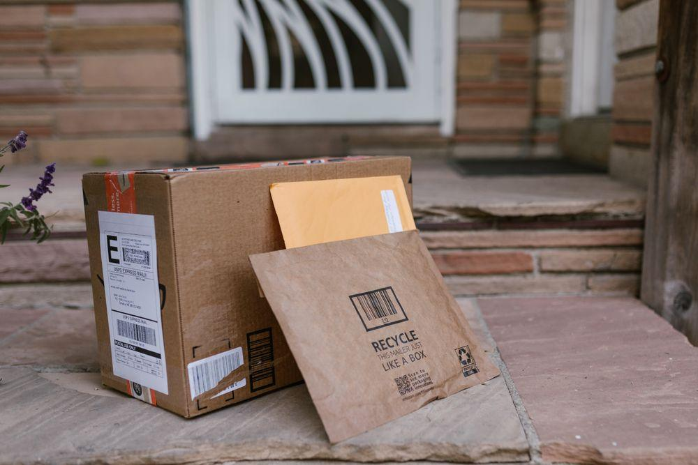
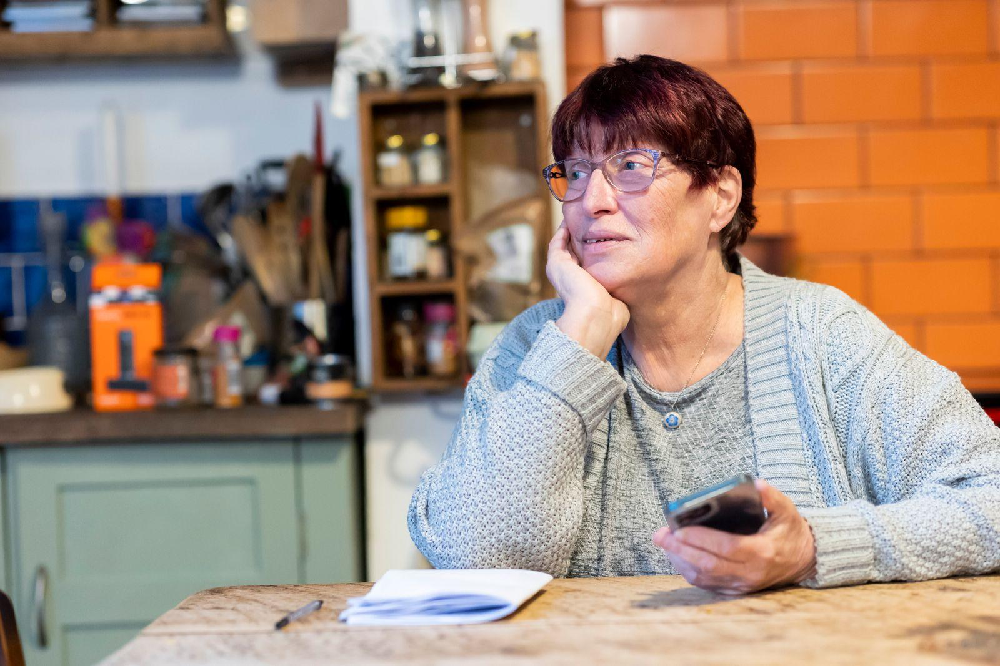

Product and experience design leader, agentic commerce
People let software shop for them only when they can see it, steer it, and take it back.
I've spent 20 years shipping commerce, search, and AI assistant experiences at Microsoft, Amazon, TikTok, and Walmart Connect, and 12 of them hiring and leading the product design, content design, research, and product teams behind them.
- Designers, PMs and TPMs hired and grown
- 30+
- Self-serve activation, Walmart Connect
- +45%
- Purchase intent, TikTok
- +37%
- Peak-season sales, Amazon mobile
- 4x
-
Goal, in the shopper's words
Trail shoes for mud, wide fit, under $140.
-
Inspectable ranking
Three pairs meet all three. I ranked them on grip and fit in verified reviews.
- Fellrun Trail$119, runs narrow
- Ridgeline Grip$129, best match
- Basin XT$138, heavier
Why these three?
Filtered to wide sizes under $140, then ranked by grip ratings. Two pairs were dropped because they don't come in wide.
-
Nothing is bought without a yes
Reversible after the fact
Buy Ridgeline Grip in for $129 with your saved card?
You can undo until it ships.Order placed. You can undo until it ships tomorrow.
Four moments where a shopper decides whether to trust
The journey I design for, from the first sentence to the box at the door.
-
1 Ask
Say what you want, in your own words.
-
2 Compare
Weigh options you didn't have to browse for.
-
3 Approve and pay
Say yes once, and know what that yes covers.
-

4 After the purchase
Track it, change it, or take it back.
Three case studies
Each opens to a 30-second read: problem, research and constraints, key trade-offs, final solution, and results, plus a six-frame UX storyboard of the solution.
-

Tagor AI
Founder & Chief Product & Technology Officer, 2025 to presentAn AI co-pilot people can trust with their money
Investors and advisors won't act on AI financial advice they can't inspect, and regulators won't allow advice that can't be explained. As founder and CPTO, I set the experience vision and built the design system and human-in-the-loop patterns for delegation, approval, and recovery across Investor and Advisor Co-Pilot, cutting concept-to-shipped lead time by 40%.
−40%concept-to-shipped lead time
-
Walmart Connect
Head of Product, Commerce Onboarding, Wallet/Credit & Payments, 2025 to presentOne journey from sign-up to payment, across six surfaces
Advertisers joining Walmart Connect crossed six fragmented surfaces, from self-serve sign-up through credit, wallet, billing, and support, and activation took days. As Head of Product, I set one cross-surface experience strategy and shipped conversational onboarding and an agentic billing assistant with explainable credit decisions and approval gates, lifting self-serve activation 45% (days to hours) and cutting billing-friction tickets by about 20%.
+45%self-serve activation
-
TikTok
Product Lead, Conversational AI, Commerce Discovery & Creative, 2024 to 2025Conversational discovery, from a stated goal to shoppable creative
Brands and sellers had to work across four separate TikTok surfaces to turn a business goal into content that sells. As product lead, I directed the experience strategy for TikTok Symphony Assistant and co-led design, content, and research to ship natural-language goal setting, catalog-grounded recommendations, and generative merchandising, driving a 37% lift in purchase intent and 38% in brand favorability.
+37%purchase intent
What earns confidence when software acts for a shopper
Five properties I design for. Each is a pattern I've shipped, not a slogan.
- Legible
- They can tell what the system is doing and why, in plain words.
- Confidence framing and plain-language suitability disclosures at Tagor AI. Credit and risk explanations at the moment of decision at Walmart Connect.
- Controllable
- They set the limits, and friction rises only where the stakes do.
- Step-up approvals at Tagor AI. Approval gates and supervision checkpoints at Walmart Connect. Preview-and-approve controls at TikTok.
- Inspectable
- Every recommendation can show the evidence behind it.
- Source-cited answers at Tagor AI. Catalog-grounded recommendations at TikTok. AI transparency standards at Amazon.
- Reversible
- Mistakes are cheap to undo, so trying is cheap too.
- One-click action reversal at Tagor AI. Guided error recovery at Walmart Connect. Automated anomaly recovery at TikTok. Hallucination recovery flows at Amazon.
- True to intent
- The system works toward the goal they stated, not one it inferred for itself.
- Progressive goal expression at Tagor AI. Natural-language goal setting at TikTok. User-controllable privacy and transparency indicators in Microsoft Teams.
How I lead design organizations
12+ years of people leadership across large, matrixed organizations where no single team owns the whole experience.
Build teams where design, content and research are peers
I've hired, mentored and grown 30+ designers, PMs and TPMs. At Tagor AI I built the founding team across product design, content design, UX research and AI engineering. At Walmart Connect I lead embedded content design and UX research pods; at TikTok I co-led all three disciplines.
Run quality as a system, not a heroic review
Figma design-system libraries with shared tokens and conversational components, a weekly multidisciplinary critique, and analytics-backed experiments before anything scales.
Put design in the roadmap, not downstream of it
At Walmart Connect I partner as a peer with Engineering, Finance and Legal VPs on multi-quarter platform roadmaps. At Microsoft I influenced multi-year direction across Teams, SharePoint and Azure Cognitive Services.
Career
2025 to present
Tagor AI
Founder & CPTO. Human-in-the-loop AI co-pilots for regulated financial advice.
2025 to present
Walmart Connect
Head of Product. Onboarding, wallet, credit and payment experiences.
2024 to 2025
TikTok
Product Lead. Symphony Assistant and commerce discovery.
2022 to 2024
Amazon
Principal PM. Conversational assistants and generative visuals; CTRs up to +40%.
2017 to 2022
Microsoft
Principal PM. Industry-first multimodal AI in Teams, built on Fluent Design.
2016 to 2017
Snapdeal
Associate Director. Marketplace recommendations, comparison and merchant tools.
2007 to 2016
Amazon India and Cisco
Mobile shopping discovery (4x peak-season sales) and a 0-to-1 targeted TV platform.
Foundation
HCI research
BITS Pilani, 2 patents, peer-reviewed tactile and visual interface papers, Frost & Sullivan award.
Where this meets Microsoft Commerce
One shopper journey across Copilot, Bing and Edge, and the work I'd bring to each part of it.
Copilot: shopping in conversation
Goal expression, products represented in dialogue, and setup completed without leaving the conversation, as shipped in TikTok Symphony Assistant. Approval and recovery patterns from Tagor AI.
Bing: shopping inside search
Sponsored discovery and ML recommendations on Amazon mobile, comparison flows at Snapdeal, and catalog-scale conversational comparison at Amazon.
Edge and Checkout: the payment moments
Wallet, credit, checkout billing and post-purchase support unified into one journey at Walmart Connect, with explainable decisions and guided recovery.
Special projects: where Commerce goes next
Incubated the Symphony generative AI creative suite at TikTok and industry-first multimodal AI concepts in Microsoft Teams, from pitch to shipped product.